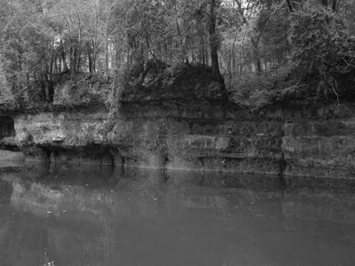
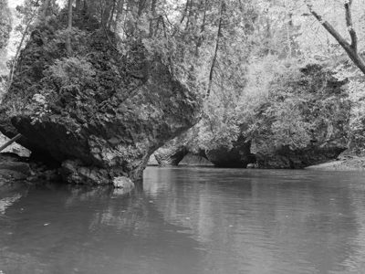
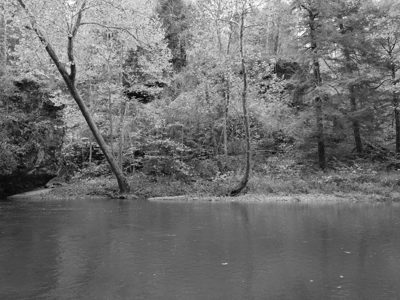
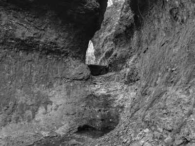
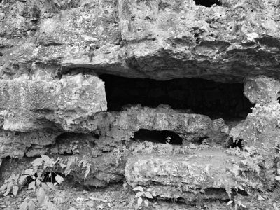

Public Lands Institute
Map
Archive
About
Arc of Appalachia
OH

Arc of Appalachia 1 · 2025-10-27
_DSF0216.jpg

Arc of Appalachia 2 · 2025-10-27
_DSF0227.jpg

Arc of Appalachia 3 · 2025-10-27
_DSF0229.jpg

Arc of Appalachia 4 · 2025-10-27
_DSF0238.jpg

Arc of Appalachia 5 · 2025-10-27
_DSF0243.jpg
← Hocking Hills State Park
Mount Airy Forest →